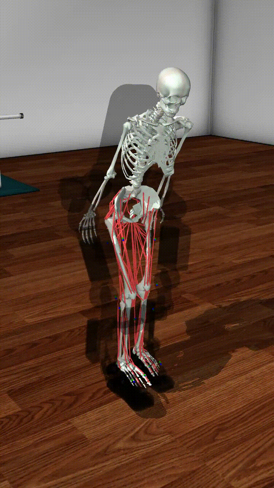
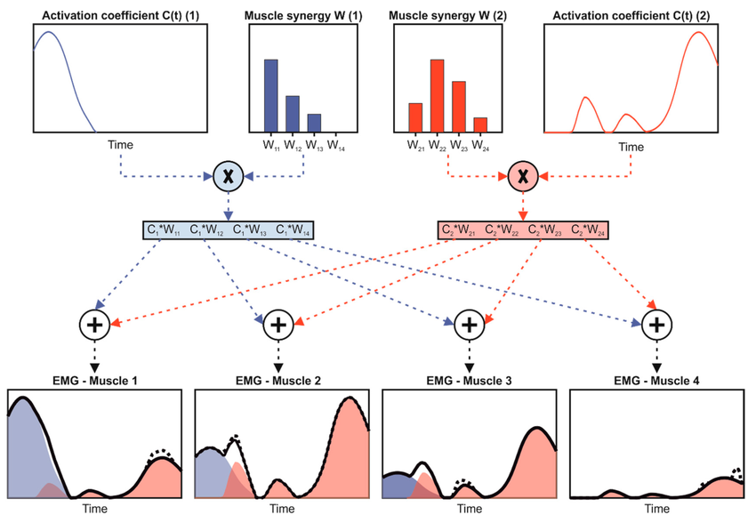
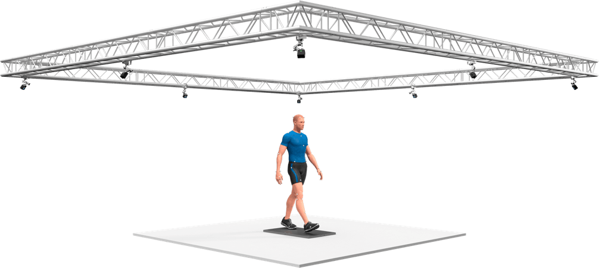
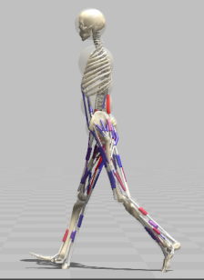
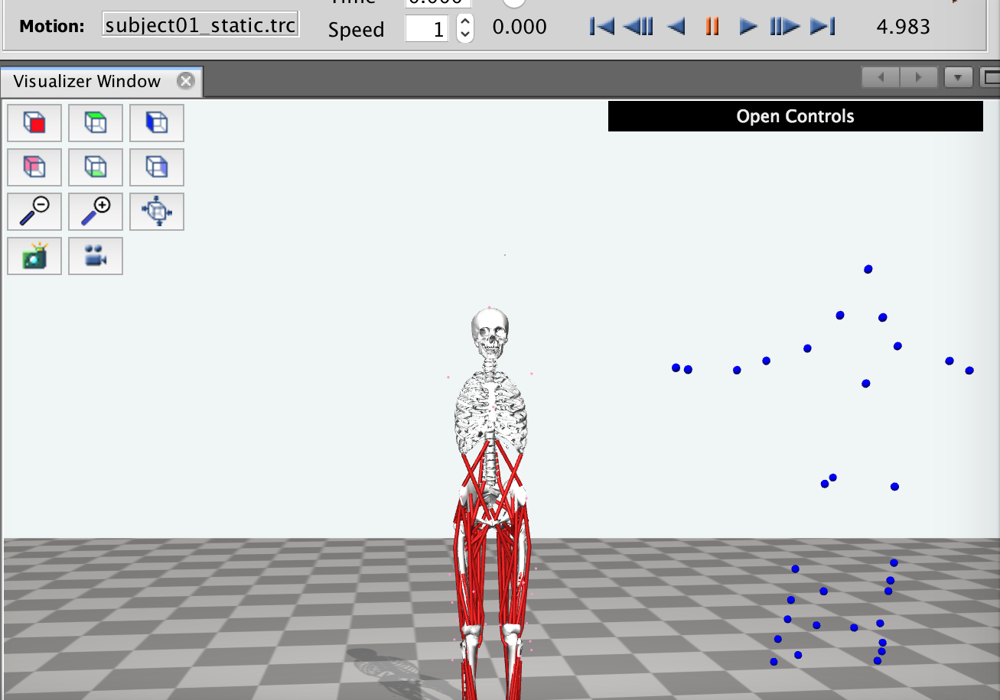

Muscle Synergy Priors Enhance Biomechanical Fidelity in Predictive Musculoskeletal Locomotion Simulation
Literature Review, FACTS Lab + Dynamo Lab
Georgia Institute of Technology
October 30, 2026
Motivation
Why learn locomotion policies for musculoskeletal models (MSMs)?
- Enables a simulation-based study of human gait, and how it physiologically changes due to pathology.
- Easier data collection for training and personalizing assistive device controllers.
Assistive devices, like exoskeletons, can significantly increase functional mobility, especially in older age [1]. 

Background
Learning Locomotion with Musculoskeletal Models
RL has enabled musculoskeletal simulations to generate diverse, human-like movement [2]. Most of this progress uses motion-imitation rewards; predictive simulation works without them.
Predictive Simulation
Reward = task + biologically-plausible terms, no reference
Gap the paper is trying to address: visually plausible motion ≠ experimentally grounded biomechanics
Muscle Synergies: Conceptually
Evidence suggests the nervous system doesn’t control each muscle separately; it activates fixed groups of muscles together [9].
Without synergies (Independent Controller)
- the controller sets every leg muscle on its own
- in this model: 40 muscles per leg
With synergies (Synergistic Controller)
- turns on a group of muscles, in fixed proportions
- the controller only decides how much of each group to use
- in this paper: 10 muscle synergies per leg
Muscle Synergies: Definition
Definition: Muscle Synergy
\[ \mathbf{a}(t) \approx \sum_{j=1}^{k} w_j(t)\,\mathbf{h}_j \]
- \(\mathbf{h}_j\): which muscles are in group \(j\), and how strongly (fixed)
- \(w_j(t)\): how much group \(j\) is on at time \(t\) (what the controller chooses)
- \(k\) groups ≪ number of muscles

In the figure: \(W\) = \(\mathbf{h}_j\), \(C(t)\) = \(w_j(t)\)
Method
Method Overview
Can embedding neurophysiological structure (muscle synergies) into RL improve the biomechanical fidelity of predictive simulation? [12]
1. Data Collection
→
2. Muscle Activation Estimation
→
3. Muscle Synergy Identification
→
4. RL Policy Training
Bro
Method Overview
Can embedding neurophysiological structure (muscle synergies) into RL improve the biomechanical fidelity of predictive simulation? [12]
1. Data Collection
→
2. Muscle Activation Estimation
→
3. Muscle Synergy Identification
→
4. RL Policy Training
Data Collection
Subject: 1 healthy young male (28 y, 69.56 kg, 176 cm), no history of neuromuscular or cardiovascular disorders
Protocol: 10 trials of 10 m overground walking → 1 stride kept per trial
Data collected: optical motion capture (12 OptiTrack Prime 13 cameras, 100 Hz, 38 markers), 5 force plates (1000 Hz; 4 AMTI, 1 Bertec)
Preprocessing: 4th-order Butterworth low-pass (12 Hz) on markers + GRFs; heel strike = vertical GRF first exceeds 15 N

No EMG was collected.
Method Overview
Can embedding neurophysiological structure (muscle synergies) into RL improve the biomechanical fidelity of predictive simulation? [12]
1. Data Collection
→
2. Muscle Activation Estimation
→
3. Muscle Synergy Identification
→
4. RL Policy Training
Muscle Activation Estimation
- Build the model: H2190 (3D, 21 DoF, 90 muscles, incl. lumbar joint + 10 trunk muscles), converted from Hyfydy to OpenSim
- Scale: fit the model to the participant’s body size (markers from one walking trial)
- Inverse kinematics: marker positions → joint angles \(\mathbf{q}(t)\)
- MocoInverse [15]: joint angles + GRFs → estimated activations for all 90 muscles


Method Overview
Can embedding neurophysiological structure (muscle synergies) into RL improve the biomechanical fidelity of predictive simulation? [12]
1. Data Collection
→
2. Muscle Activation Estimation
→
3. Muscle Synergy Identification
→
4. RL Policy Training
Identifying Muscle Synergies
Factor the estimated right-leg muscle activations into a small set of synergies.
Non-negative matrix factorization (NMF) on the 40 right-leg muscles, \(k = 10\) synergies:
\[ \underbrace{M}_{\text{activation matrix}} \;\approx\; \underbrace{W}_{\text{temporal activations}} \; \underbrace{H}_{\text{spatial weights}} \]
- \(M\) (\(T \times 40\)) → estimated activation of each muscle over time
- \(W\) (\(T \times 10\)) → how much each synergy is on over time; the policy produces these during RL
- \(H\) (\(10 \times 40\)) → which muscles are in each synergy; fixed and embedded in the controller
Method Overview
Can embedding neurophysiological structure (muscle synergies) into RL improve the biomechanical fidelity of predictive simulation? [12]
1. Data Collection
→
2. Muscle Activation Estimation
→
3. Muscle Synergy Identification
→
4. RL Policy Training
Training a Policy with RL
Two controllers are trained with the same setup — they differ only in what the policy outputs.
- Synergistic controller (30 actions): 10 right-leg synergy activations + 10 left-leg synergy activations + 10 torso/pelvis muscle activations → fixed synergy matrix \(H\) turns them into leg muscle activations
- Independent controller (baseline): sets every muscle excitation (80) directly
Same for both:
Reward Design
Same reward for both controllers: walk at the target speed, without wasting effort, straining joints, or falling.
\[ R = w_{\text{vel}} R_{\text{vel}} + w_{\text{effort}} R_{\text{effort}} + w_{\text{rom}} R_{\text{rom}} + w_{\text{fall}} R_{\text{fall}} \]
- Velocity: walk at the target speed, without drifting sideways or shaking the head
- Effort: penalize total muscle activation
- Range of motion: penalize knee hyperextension + extreme lumbar bending
- Fall: penalize falling
No imitation term → the human data is never used as a target.
Evaluation Protocol
Compare both controllers’ gait to human treadmill data, relative to how much humans differ from each other.
- Data: two open-source treadmill datasets, not the data used to build the synergies
- Speed: level walking, 0.7–1.8 m/s, 22 subjects [13]
- Slope: \(\pm 5^\circ\) at 1.2 m/s, 8 subjects [14]
- Metrics: sagittal joint angles, joint moments, GRFs (AP + vertical), EMG for 8 lower-limb muscles
How they score it
- RMSE ratio: sim-vs-human error ÷ average human-vs-human error in the same dataset
- ≈ 1.0 → the sim is as far from the data as one person is from another
- computed per variable and gait phase → count how many exceed 2, 3, and 5
- EMG: correlation with human EMG, compared to the spread of correlations between humans
Results
RL Performance

Similarity of Muscle Activities

1.2 m/s level walking, 8 muscles vs. EMG (22 people)
Synergistic → within the human range for all 8
Independent → outside it for 5 / 8; GAS, ST, BF negatively correlated
Kinematic and Kinetic Similarity: Speed

Both walk stably 0.7 → 1.8 m/s
Synergistic → keeps human speed trends (red arrows)
Independent → reverses or flattens them (green arrows): hip + knee angle in swing, knee angle + ankle moment in loading response
Kinematic and Kinetic Similarity: Slope

Uphill, level, downhill (\(\pm 5^\circ\)) at 1.2 m/s
Both → reproduce the basic GRF shape
Independent → knee moment in loading response hits RMSE ratio 8.56 (~\(2\times\) synergistic’s worst)
Quantitative Summary: RMSE Ratios

Ratio > 3: 23 independent vs. 7 synergistic
Ratio > 5: 7 independent vs. 0 synergistic
Synergistic worst moment: hip flexion, loading response (4.16 / 4.54)
Discussion
Limitations
level walking + modest slopes only (running, turning, stairs untested)
synergies from inverse simulation, not EMG
synergy set + dimensionality fixed across tasks and speeds
single participant used for simulation
biomechanical analysis uses only the best of 5 seeds
no criterion reported for choosing \(k = 10\)
Conclusion
Takeaways
Synergies as the action space -> physiology-informed prior from minimal data (
With only a high-level velocity target (no imitation reward):
- muscle activation timing within cross-human variability for all 8 muscles at 1.2 m/s
- largely preserves speed- and slope-dependent trends in human data
- no extreme (RMSE ratio > 5) kinematic or kinetic errors